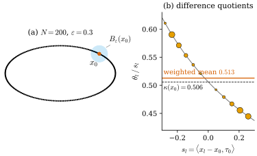

48.1 Problem and Key Idea
Goals
- 논문이 푸는 문제, 곧 mean curvature 하나가 아니라 second fundamental form 전체를 measure(특히 point cloud)에서 정의하고 계산하는 문제를 말할 수 있다.
- Hutchinson의 generalized second fundamental form을 그대로 regularize할 수 없는 두 이유(order-1 distribution이 아니다, 너무 rigid하다)를 설명할 수 있다.
- 핵심 아이디어, 곧 “tangent projection을 곱한 first variation”(G-linear variation)에서 curvature tensor를 linear system으로 풀고, 그것을 kernel로 흐린다는 것을 그림으로 설명할 수 있다.
- 이 장의 기호가 Chapter 46–47과 이 study set의 규약과 어떻게 대응하는지 안다.
Prerequisites
- Section 46.6: tangent projection의 도함수와 second fundamental form(Proposition 46.6.1), 부분적분 공식(Proposition 46.6.3), Hutchinson의 정의(Definition 46.6.4)와 junction(Proposition 46.6.5)
- Section 46.5: first variation과 generalized mean curvature(Definition 46.5.4)
- Section 47.4: approximate mean curvature(Definition 47.4.1)와 그 orthogonal 판(Definition 47.4.10)
Motivation
Chapter 47은 point cloud처럼 넓이도 tangent plane도 확실하지 않은 데이터에서 mean curvature를 정의하고, 그것이 언제 얼마나 빨리 smooth surface의 값으로 가는지 보았다. 그 장의 마지막 절(Remark 47.8.1)은 “principal curvature와 principal direction”이 남은 숙제라고 적었다. mean curvature는 second fundamental form의 trace 하나다. 3DGS에서 Gaussian의 긴 축을 덜 휜 방향에 맞추거나(Chapter 49), saddle과 convex한 곳을 구별하려면 tensor 전체가 필요하다. 이 장은 같은 저자들이 그 숙제를 푼 후속 논문 [BLM22]을 읽는다. 이 절은 논문의 Introduction을 읽는다. 무엇이 문제인지, 왜 기존의 약한 정의를 그대로 쓸 수 없는지, 그리고 저자들의 해법이 한 문장으로 무엇인지다.
The Problem
논문은 “second-order extrinsic property”, 곧 curvature를 smooth surface, piecewise smooth surface, 이산 데이터에 대해 한 framework로 계산하는 방법을 목표로 내건다. 특히 point cloud처럼 구조 없는(unstructured) 데이터에서 curvature를 구하는 일을 중요하지만 매우 섬세한 과제로 본다. 논문이 언급하는 기존 방법은 다음과 같다(평가도 논문의 것이다).
- 국소 재구성: Moving Least Squares(MLS)처럼 국소적인 implicit surface를 맞춘 뒤 미분한다.
- integral geometry: 작은 ball 안의 부피나 covariance처럼 적분으로 정의되는 양의 국소 전개와 curvature 사이의 관계를 쓴다. 이 방법들은 triangle mesh 같은 구조 있는 데이터에도 쓰인다. 개관으로 Najman–Romon이 엮은 책 [NajmanRomon17]을 든다(같은 저자들이 엮은 앞선 모음은 [NajmanRomon14]).
- metric measure space의 curvature(Menger, Wald, Finsler–Haantjes, [NajmanRomon17]): 약한 curvature이지만 수치 근사가 복잡하거나 비싸다.
- normal cycle: geometric measure theory의 도구를 이산 surface에 쓴 드문 예외로, distance-like 함수의 offset에서 curvature를 복원한다([CCLT09], [CohenSteinerMorvan06]).
저자들은 자기 framework의 장점을 두 가지로 요약한다. 매끄럽지 않고 구조 없는 데이터를 넓게 다루면서 consistency와 수렴 성질을 갖는다는 것, 그리고 수치 계산에 잘 맞는다는 것이다. framework는 varifold다. varifold, mass, first variation은 Chapter 46에서 정의했다. 논문은 varifold 이론의 역사(Almgren의 비누막 모형, Allard의 first variation, Almgren–Pitts min–max 이론과 Willmore 추측의 증명, Brakke의 weak mean curvature flow, Allen–Cahn 방정식의 극한)를 짧게 훑고, 이 모든 응용이 varifold의 second-order 성질을 쓴다는 점을 강조한다.
문제는 두 겹이다.
- first variation이 measure가 아니다. point cloud varifold의 first variation은 Dirac mass의 방향 미분의 합이라서 measure가 아니다. 그래서 분해 \(\delta V = -\vec H\norm{V} + \delta V_s\)((46.5.5))로 mean curvature를 읽을 수 없다. [BLM17]은 이것을 kernel로 흐려서 풀었다(Definition 47.4.1).
- Hutchinson의 tensor는 흐릴 수 없다. second fundamental form 전체에 대한 고전적인 약한 정의는 Hutchinson의 generalized second fundamental form이다(Definition 46.6.4). 같은 regularization을 여기에 쓰고 싶지만 저자들은 두 가지 장애를 든다.
- 정의식 (46.6.7)에서 미지의 tensor \(A_{ijk}\)가 test function의 \(S\)-도함수 \(D^*_{jk}\varphi\)와 곱해져 있다. 그래서 이 식은 \(A\)를 order-1 distribution으로 정의하지 않는다. distribution이 아니면 convolution으로 흐린다는 말이 뜻을 갖지 않는다. 저자들은 이것을 “구조적 장애”라 부른다.
- \(S\)에 대해 nonlinear인 test function이 주는 제약이 정의를 “극도로 rigid”하게 만든다. \(L^p_{\mathrm{loc}}\)(\(p \gt d\)) curvature를 갖는 integral varifold를 한 점에서 확대한 극한(blow-up)은 반드시 multiplicity를 가진 \(d\)-plane 몇 개의 합이다. 그래서 junction 같은 흔한 singularity가 배제된다(Proposition 46.6.5).
The Key Idea
출발점은 smooth closed \(d\)-submanifold \(M\)에 대한 부분적분 공식 (46.6.5), 곧 논문의 (1.6)이다. boundary가 없으면
이다. 여기서 \(P\)는 tangent space로의 orthogonal projection matrix, \(A_{ijk} = \inner{\nabla^MP_{jk}}{e_i}\)는 그 tangential 도함수, \(\vec H\)는 mean curvature vector(principal curvature의 합)다. 이 식의 두 변은 성격이 다르다.
- 왼쪽에는 \(P\)만 있고 그 도함수가 없다. varifold는 각 점의 plane \(S\)를 기억하므로, \(P_{jk}\)를 \(S_{jk}\)로 바꾸면 어떤 varifold에서도 계산할 수 있다. 저자들은 이것을 \(V\)의 G-linear variation \(\delta_{ijk}V\)라 부른다(Section 48.3). test function \(\varphi(x)S_{jk}\)가 Grassmannian 변수 \(S\)에 대해 linear이기 때문이다. Hutchinson과 달리 이것은 \(\varphi\)에 대한 order-1 distribution이다.
- 오른쪽의 \(A_{ijk} + P_{jk}\vec H_i\)는 미지의 tensor \(A\)의 linear 식이고, \(\vec H_i = \sum_qA_{qiq}\)이다(Proposition 46.6.1(c)). 그래서 왼쪽이 measure이면 그 density \(\beta_{ijk}\)에서 \(A\)를 \(n^3\)개의 linear equation으로 풀 수 있다. 이 해가 weak second fundamental form(WSFF)이다.
그 뒤는 Chapter 47과 같은 길이다. point cloud에서는 \(\delta_{ijk}V\)가 measure가 아니므로 kernel \(\rho_\varepsilon\)로 흐린 \(\delta_{ijk}V*\rho_\varepsilon\)을 흐린 mass로 나누어 \(\beta\)의 근사를 얻고, 같은 linear system을 푼다. 이것이 \(\varepsilon\)-WSFF다. 저자들은 smooth surface에서 \(\vec H\)가 tangent plane에 수직이라는 사실을 강제한 변형(WSFF\(^\perp\))도 정의한다. 그 근사판은 linear system을 풀 필요도 없이 닫힌 꼴로 쓰인다. 이 장에서 유도할 그 꼴(Section 48.5)을 미리 적으면 다음과 같다.
\(c^V(x)\)는 점 \(x\)의 plane(point cloud에서는 \(x = x_l\)의 \(P_l\))이다. 읽으면 이렇다. 이웃의 plane \(S\)와 중심의 plane의 차 \(S - c^V(x)\)를, kernel의 도함수로 가중해 평균한다. 곧 “plane field의 kernel 차분 몫”이다. smooth surface에서 \(A_{ijk}\)가 plane field \(P\)의 도함수였으니 자연스러운 이산판이다. 이것이 이 장의 결론을 한 줄로 쓴 것이고, 나머지는 이 식이 왜 맞고 언제 수렴하는지에 대한 이야기다.
Figure 48.1.1이 가장 단순한 경우(\(n = 2\), \(d = 1\), curve)에서 이 식이 하는 일을 보여 준다. (a)는 ellipse \((2\cos t, \sin t)\) 위의 점 \(200\)개와 점 \(x_0\)(\(t = \pi/4\)) 중심의 ball \(B_\varepsilon(x_0)\)(\(\varepsilon = 0.3\))이다. ball 안에 \(x_0\)을 포함해 점 \(12\)개가 있다. (b)가 핵심이다. 이웃 \(x_l\)마다 그 tangent가 \(x_0\)의 tangent \(\tau_0\)에서 돈 각 \(\theta_l\)을, \(\tau_0\) 방향의 변위 \(s_l\)로 나눈 차분 몫 \(\theta_l/s_l\)을 찍었다. 점의 넓이는 kernel 가중치 \(m_l\xi(\abs{x_l - x_0}/\varepsilon)\)에 비례한다. 회색 곡선은 ellipse 자체의 \(\theta(s)/s\)다. 차분 몫은 왼쪽(vertex 쪽, \(s \lt 0\))에서 \(0.611\), 오른쪽(위쪽 평평한 쪽)에서 \(0.445\)까지 퍼져 있다. curvature가 vertex 쪽으로 커지기 때문이다. 그 가중 평균(주홍 선)은 \(0.513\)이고, \(x_0\)의 curvature \(\kappa = 0.506\)(검은 파선)에 가깝다. (48.1.2)을 안쪽 unit normal로 contract해 정확히 계산한 값은 \(0.5074\)다(바깥 normal로 contract하면 부호가 바뀌어 \(-0.5074\)이다. 이 장의 부호 규약은 Conventions 상자에 있다). curve에서는 (48.1.2)을 안쪽 normal로 contract한 값이 1차 근사에서 바로 이 가중 평균이 된다(바깥 normal이면 부호만 바뀐다, Exercise 48.1.4). 나머지 \(0.005\)의 차이는 \(\cos\theta_l\) 같은 이차 이상의 항이 만든다.

Verification: verify/v-48-1-problem-key-idea.py
What the Paper Claims
Abstract와 Introduction이 밝힌 기여를 논문의 순서대로 정리한다. 이것은 논문의 주장이고, 근거가 충분한지는 Section 48.7에서 따진다.
- Hutchinson의 generalized second fundamental form을 다시 검토해, regularization에 맞는 weak curvature tensor(WSFF)를 정의한다. G-linear variation이라는 variation operator의 모임(Definition 3.1)에서 출발하므로, first variation에서 generalized mean curvature를 얻는 표준 절차와 같은 길을 간다(Definition 3.5). 저자들은 WSFF를 Hutchinson 정의에서 뽑아낸 “core distributional notion”이라 부르고, 공간 변수 \(x\)에만 의존하며 G-linear variation에서 명시적인 공식 (3.5)로 계산된다는 점을 장점으로 든다. 저자들이 아는 한 이 공식들은 새롭다고 쓴다(Section 48.3).
- smooth \(d\)-surface의 second fundamental form이 만족하는 구조 성질 (3.10)을 강제하고, regularize한 뒤 더 좋은 수렴 속도를 주는 변형 WSFF\(^\perp\)를 정의한다(Definition 3.7, Theorem 6.11).
- Hutchinson의 tensor와 비교한다. rectifiable varifold에서 Hutchinson의 tensor가 있으면 WSFF도 있고 둘이 같다(Proposition 4.2). 거꾸로 WSFF는 Hutchinson의 tensor가 존재할 수 없는 junction에서도 정의된다(Section 48.4).
- 구조 성질(Proposition 5.1, 5.2), compactness(Proposition 5.3), WSFF의 수렴(Proposition 5.4)을 보인다.
- [BLM17]의 regularization을 WSFF와 WSFF\(^\perp\)에 써서 일반 varifold의 approximate second fundamental form(\(\varepsilon\)-WSFF, \(\varepsilon\)-WSFF\(^\perp\), Definition 6.5, 6.9)을 정의하고, 수렴을 Theorem 6.8과 6.11로 보인다. 저자들은 이것이 consistency만이 아니라 “convergence” 결과라고 강조한다. varifold의 열의 approximate second fundamental form을 그 weak-* 극한의 second fundamental form과 비교한다는 뜻이다(Section 48.5).
- \(\R^3\)의 2차원 point cloud에서 noise와 singularity가 있을 때도 approximate principal curvature를 계산해 방법의 robustness를 보인다(§7, Section 48.6).
논문은 응용의 전망도 셋 적는다. point cloud의 discrete geometric flow(예: discrete mean curvature flow로 shape smoothing과 segmentation, 미시 입자계의 interface 연구), 데이터 분석과 분류를 위한 curvature estimator, 그리고 구조 없는 데이터의 intrinsic 성질(point cloud의 밀도, grid 없는 수치법의 이계도함수)을 curvature와 관련된 양으로 추정하는 것이다. 이 논문에는 이 응용들의 결과가 없다.
Notation of the Paper
논문 §1의 기호는 대부분 Chapter 46, Chapter 47과 같다. 다른 것과 겹치는 것을 아래 상자에 모았다. 이 장의 모든 절이 이 상자를 따른다.
Summary
- 논문의 문제는 second fundamental form 전체를 smooth surface와 point cloud를 포함한 일반 varifold에서 정의하고 계산하는 것이다. point cloud의 first variation은 measure가 아니고, Hutchinson의 tensor는 order-1 distribution이 아니며 너무 rigid해서 그대로 regularize할 수 없다.
- 핵심 아이디어는 부분적분 공식 (48.1.1)의 왼쪽, 곧 \(P_{jk}\)를 곱한 first variation을 varifold로 옮긴 G-linear variation에서 curvature tensor를 linear system으로 푸는 것이다. 이것이 WSFF이고, 흐린 판이 \(\varepsilon\)-WSFF다.
- WSFF\(^\perp\)의 근사판은 “plane field의 kernel 차분 몫” (48.1.2)로 쓰인다. curve에서는 1차 근사에서 tangent 각의 차분 몫의 가중 평균이다(Figure 48.1.1).
- 논문의 \(H\)는 합의 규약이고 이 장은 \(\vec H\)로 쓴다. 논문은 \(\eta\), \(d\), \(c\), \(C\) 같은 글자를 여러 뜻으로 쓴다(Conventions 상자).
다음 절에서는 논문 §1–§2를 읽는다. smooth submanifold에서 second fundamental form을 projection의 도함수로 쓰는 법과 그 부분적분 공식을 Chapter 46에서 상기하고, 그 tensor에서 principal curvature를 꺼내는 법(논문이 §7.1에서 쓰는 절차)을 증명한다. 그리고 §2의 varifold 정의가 Chapter 46–47의 어디에 있는지 정리한다.
Quick check
Exercise 48.1.1 ★ \(\R^3\)의 surface에서 unit normal \(\mathbf{N}\)을 \(-\mathbf{N}\)으로 바꾸면 principal curvature \(\kappa_1, \kappa_2\)는 어떻게 바뀌는가? 논문의 그림이 보이는 세 양 \(\kappa_1\kappa_2\), \(\abs{\kappa_1} + \abs{\kappa_2}\), \(\abs{\kappa_1 + \kappa_2}\)가 바뀌지 않음을 보여라. \(\kappa_1 + \kappa_2\)는 왜 그리지 않는가?
Solution
\(W = -d\mathbf{N}\)이 \(-W\)가 되므로 eigenvalue가 \(-\kappa_1, -\kappa_2\)가 된다. \((-\kappa_1)(-\kappa_2) = \kappa_1\kappa_2\), \(\abs{-\kappa_1} + \abs{-\kappa_2} = \abs{\kappa_1} + \abs{\kappa_2}\), \(\abs{-\kappa_1 - \kappa_2} = \abs{\kappa_1 + \kappa_2}\)이다. \(\kappa_1 + \kappa_2\)는 부호가 바뀌므로, normal의 부호를 정하지 않는 논문의 계산(\(P\)만 쓴다)으로는 정해지지 않는다.
Exercise 48.1.2 ★ \(n = 3\)에서 \(A_{ijk}\)는 \(27\)개의 수다. symmetry \(A_{ijk} = A_{ikj}\)를 쓰면 독립인 성분은 몇 개인가? \(B^k_{ij} = B^k_{ji}\)를 쓰면 \(B\)는 몇 개인가? 두 수가 같은 것은 우연인가?
Solution
\(i\)가 \(3\)가지, symmetric한 \((j, k)\)가 \(6\)가지이므로 \(A\)는 \(18\)개다. \(B\)도 symmetric한 \((i, j)\) \(6\)가지와 \(k\) \(3\)가지로 \(18\)개다. 우연이 아니다. \(A_{ijk} = B^k_{ij} + B^j_{ik}\)와 \(B^k_{ij} = \tfrac12(A_{ijk} + A_{jik} - A_{kij})\)(Proposition 46.6.1)가 두 \(18\)차원 공간 사이의 서로 역인 linear map이기 때문이다.
Verification: verify/v-48-1-problem-key-idea.py
Exercise 48.1.3 ★ Figure 48.1.1(b)에서 차분 몫 \(\theta_l/s_l\)은 \(s_l \lt 0\) 쪽이 크고 \(s_l \gt 0\) 쪽이 작다. ellipse의 어떤 성질 때문인가? 같은 그림을 vertex \((2, 0)\)에서 그리면 차분 몫은 \(s = 0\)에 대해 어떤 symmetry를 갖겠는가?
Solution
\(\theta(s)\)는 \(x_0\)에서 \(s\)까지 curvature를 적분한 것이므로 \(\theta(s)/s\)는 그 구간의 curvature 평균이다. ellipse의 curvature \(\kappa(t) = 2/(4\sin^2t + \cos^2t)^{3/2}\)는 vertex(\(t = 0\), \(\kappa = 2\))에서 위쪽(\(t = \pi/2\), \(\kappa = \tfrac14\))으로 갈수록 줄어든다. \(\tau_0\)가 위왼쪽을 향하므로 \(s \lt 0\)은 vertex 쪽이고 평균이 크다. vertex에서는 ellipse가 \(x\)축에 대해 symmetric이므로 \(\theta(-s) = -\theta(s)\)이고, 차분 몫은 \(s\)의 짝함수가 된다. vertex에서 멀어질수록 curvature가 줄어들므로 양쪽 모두 \(\kappa = 2\)보다 작다. 같은 point cloud에서 \(\varepsilon = 0.2\)이면 차분 몫은 \(1.945\)–\(1.998\)이다.
Verification: verify/v-48-1-problem-key-idea.py
Exercise 48.1.4 ★★ \(n = 2\), \(d = 1\)이고 natural pair \(2\xi(r) = -r\rho'(r)\)를 쓴다. 이웃 \(x_l\)의 tangent가 \(\tau_l = \cos\theta_l\,\tau_0 + \sin\theta_l\,\nu_0\)(\(\nu_0\)는 \(\tau_0\)를 반시계로 \(90^\circ\) 돌린 안쪽 normal)이고, \(u_l = (x_l - x_0)/\abs{x_l - x_0}\), \(r_l = \abs{x_l - x_0}/\varepsilon\)라 하자. (48.1.2)을 point cloud에 쓴 값을 바깥 normal \(n_0 = -\nu_0\)로 contract하고 \(\tau_0\)로 제한하면, \(\theta_l\), \(\inner{\tau_l}{u_l} \approx \operatorname{sgn}s_l\), \(\abs{s_l} \approx \varepsilon r_l\)의 1차 근사에서 \(-\sum_lm_l\xi(r_l)(\theta_l/s_l)\big/\sum_lm_l\xi(r_l)\)가 됨을 보여라. 반지름 \(r\)인 circle에서는 \(\theta/s \ge 1/r\)임을 보이고, 가중 평균이 \(1/r\)보다 조금 크다는 것을 설명하여라.
Solution
Section 48.2의 contraction \(\sum_kB^k_{ij}(n_0)_k\)를 \(B = \tfrac12(A_{ijk} + A_{jik} - A_{kij})\)로 계산하면, \(D_l = P_l - P_0\), \(w_l = P_lu_l\), \(a_l = -\tfrac{d}{n}m_l\rho'(r_l)/\varepsilon\)에 대해
\[ \begin{aligned} &\tau_0^{\mathsf T}\Big(\sum_kB^k_{ij}(n_0)_k\Big)\tau_0 \\ &= \frac{\sum_la_l\big[\inner{w_l}{\tau_0}\,\tau_0^{\mathsf T}D_ln_0 - \tfrac12\inner{w_l}{n_0}\,\tau_0^{\mathsf T}D_l\tau_0\big]}{\sum_lm_l\xi(r_l)} \end{aligned} \]
이다. \(\tau_0^{\mathsf T}D_ln_0 = \inner{\tau_l}{\tau_0}\inner{\tau_l}{n_0} = -\cos\theta_l\sin\theta_l\), \(\tau_0^{\mathsf T}D_l\tau_0 = -\sin^2\theta_l\)이다. 1차 근사에서 \(\inner{w_l}{\tau_0} \approx \operatorname{sgn}s_l\), \(\cos\theta_l\sin\theta_l \approx \theta_l\)이고 둘째 항은 \(\theta_l^2\) 정도다. 그래서 \(-\sum_l\tfrac12m_l(-\rho'(r_l))\operatorname{sgn}(s_l)\theta_l/\varepsilon\,/\sum m\xi\)이고, \(\operatorname{sgn}(s_l)/\varepsilon = \abs{s_l}/(\varepsilon s_l) \approx r_l/s_l\), \(\tfrac12(-\rho'(r_l))r_l = \xi(r_l)\)이므로 \(-\sum m_l\xi(r_l)(\theta_l/s_l)/\sum m_l\xi(r_l)\)이다. circle에서 중심각 \(\varphi\)만큼 떨어진 점은 \(s = r\sin\varphi\), \(\theta = \varphi\)이므로 \(\theta/s = \varphi/(r\sin\varphi) \ge 1/r\)이고, 같으려면 \(\varphi = 0\)이어야 한다. 모든 차분 몫이 \(1/r\) 이상이므로 가중 평균도 \(1/r\)보다 크다(\(O(\varepsilon^2/r^3)\)만큼). 정확한 값에서는 \(\inner{w_l}{\tau_0} = \inner{\tau_l}{u_l}\cos\theta_l\) 같은 이차 항이 이것을 일부 상쇄한다. Figure 48.1.1에서 가중 평균 \(0.5128\)과 정확한 값 \(0.5074\)의 차이도 이런 항에서 온다. 반지름 \(1\)인 circle(점 \(2000\)개, \(\varepsilon = 0.2\))에서는 가중 평균이 \(1.0032\), 정확한 값이 \(0.9859\)다.
Verification: verify/v-48-1-problem-key-idea.py